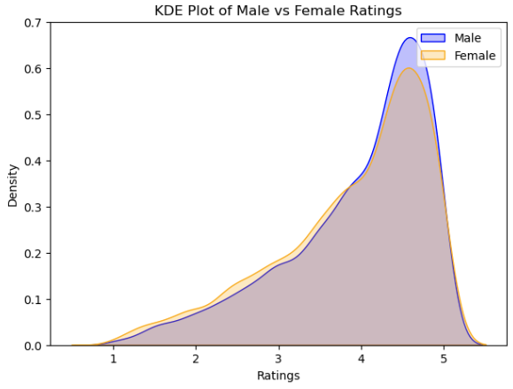
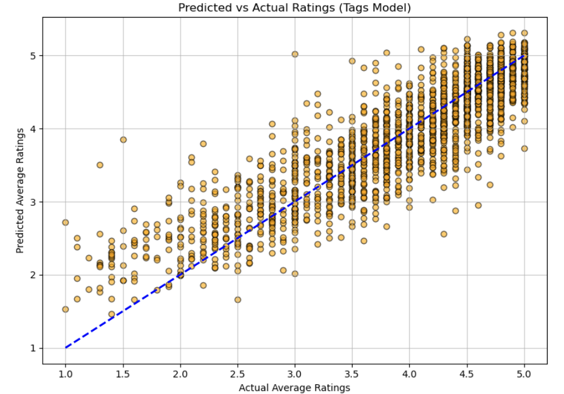

Data & Preditctive Analysis
Assessing Professor Effectiveness
Project Description
This project provides a comprehensive analysis of professor effectiveness using a dataset of student-provided ratings and tags. The primary goals were to investigate evidence of gender bias in evaluations and to identify the factors and descriptive tags most predictive of a professor's average rating and difficulty score.
Significant data preprocessing was performed to ensure the integrity of the analysis. This involved loading and merging three distinct datasets, handling missing information by removing over 19,000 incomplete rows, and dropping columns with excessive missing data. Tag data was normalized row-wise to ensure fairness across professors with varying numbers of reviews, and any professor with fewer than seven total ratings was excluded from the analysis.
A series of statistical and machine learning models were employed to answer the core research questions. Welch's t-tests and Levene's tests were used to assess gender differences in the mean and variance of ratings. Multiple linear regression models were built to determine the predictors of average rating and difficulty, using Variance Inflation Factors (VIFs) to mitigate multicollinearity. Finally, a Random Forest Classifier was trained using the Synthetic Minority Over-sampling Technique (SMOTE) to predict whether a professor would receive an attractiveness-based "pepper" rating.
Results
The analysis yielded detailed insights into gender bias and the key drivers of professor ratings, with the machine learning models demonstrating strong predictive performance.
Gender Bias Analysis
- Average Ratings: A Welch's t-test revealed a statistically significant pro-male gender bias in average ratings (p-value = 2.083 x 10⁻⁵). However, the effect size was found to be very small (Cohen's d between -0.1248 and -0.0464), indicating the bias, while present, is not practically significant.
- Spread of Ratings: There was a statistically significant difference in the variance of ratings between genders (p-value = 2.563 x 10⁻⁵), with female professors showing slightly higher variability.
- Student-Awarded Tags: After applying a Bonferroni correction, male professors were found to receive tags like "Hilarious," "Amazing lectures," and "Respected" significantly more often than female professors. The least gender-biased tags included "Tough Grader" and "Lots of homework".
- Difficulty Ratings: No statistically significant difference was found in the average difficulty ratings between male and female professors (p-value = 0.6559).
Predictive Modeling
Three separate models were trained to predict average rating, average difficulty, and the "pepper" classification.
1. Predicting Average Rating: Two regression models were created. The model using tags as predictors outperformed the model using numerical factors.
Top Predictors (Tags Model, R² = 0.77):
- Amazing lectures (β=3.9114)
- Good feedback (β=3.5959)
- Respected (β=3.2522)
Top Predictors (Factors Model, R² = 0.54):
- Avg Difficulty (β=−0.6296)
- Pepper (β=0.6053)

2. Predicting Average Difficulty (R² = 0.61): A regression model identified the tags most predictive of a professor's difficulty score.
Top Predictors:
- Tough grader (β=2.8352)
- Graded by few things (β=−2.7616)
- Clear grading (β=−2.6166)
3. Predicting "Pepper" Classification: A Random Forest Classifier was trained to predict whether a professor receives an attractiveness "pepper."
- Performance: The model achieved an accuracy of 75% and an AUROC score of 0.8167.
- Top Features: The most important features for this prediction were a professor's "Avg Rating," followed by the tags "Respected" and "Tough grader".